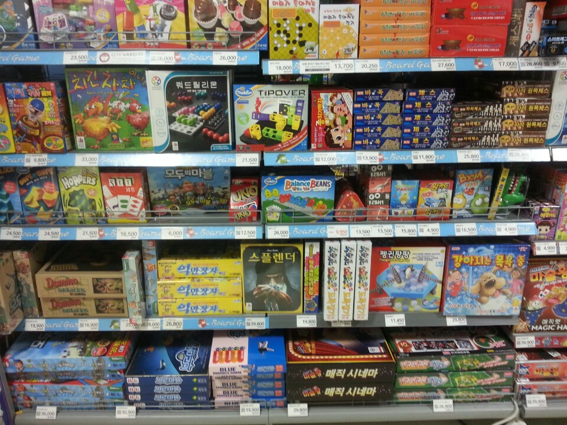

보드게임의 정의
보드 게임(board game, 말판놀이)은 놀이판 및 간단한 물리적인 도구로 진행하는 놀이를 말한다. 인터넷으로 진행하는 컴퓨터 게임에 비교해서 오프라인 게임이라고 하기도 한다. 좁은 의미에서는 놀이판 및 종이 등으로 구성된 놀이 딱지(흔히 카드)와 연필, 놀이패(토큰(token)), 주사위 등으로 구성된 게임을 말하며, 넓은 의미에서는 온라인으로 진행하는 카드게임 등을 포함한다.
보드 게임(board game, 말판놀이)은 놀이판 및 간단한 물리적인 도구로 진행하는 놀이를 말한다. 인터넷으로 진행하는 컴퓨터 게임에 비교해서 오프라인 게임이라고 하기도 한다. 좁은 의미에서는 놀이판 및 종이 등으로 구성된 놀이 딱지(흔히 카드)와 연필, 놀이패(토큰(token)), 주사위 등으로 구성된 게임을 말하며, 넓은 의미에서는 온라인으로 진행하는 카드게임 등을 포함한다.
